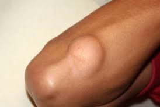

• Sangrado de tubo digestivo alto
El sangrado gastrointestinal (GI) es un síntoma de un trastorno en tu sistema digestivo. La sangre a menudo se presenta en las heces o en el vómito, pero no siempre se hace visible, ya que puede causar heces negras o alquitranadas. El nivel de sangrado puede variar de leve a intenso, y puede ser potencialmente mortal.
• Gastritis
Conjunto de trastornos caracterizados por la inflamación del revestimiento del estómago. Puede estar ocasionada por infecciones, lesiones, el uso frecuente de analgésicos llamados AINE y demasiado alcohol. Algunos de los síntomas incluyen dolor en la parte superior del vientre, náuseas y vómitos. En algunos casos, no se presentan síntomas. El tratamiento depende de la causa. Los antibióticos y los antiácidos pueden resultar de ayuda.
• Esofagitis
Inflamación que lesiona el conducto que se extiende desde la garganta hasta el estómago (esófago). Las causas son el ácido estomacal que asciende al esófago, las infecciones, algunos medicamentos y las alergias. La esofagitis suele causar dificultad para tragar, dolor al tragar y dolor en el pecho al comer. Los síntomas que requieren atención urgente incluyen alimentos que obstruyen el esófago y dolor en el pecho durante varios minutos. El tratamiento depende de la causa y puede incluir medicamentos y cirugía. En algunos casos, los cambios en el estilo de vida también pueden ayudar.
• Hernia hiatal
Afección en la que una parte del estómago empuja hacia arriba al músculo del diafragma. En la hernia de hiato, una parte del estómago sobresale dentro del tórax. Ingresa mediante un orificio donde el esófago se conecta con el estómago. Las hernias de hiato pueden no presentar síntomas. En algunos casos, pueden estar asociadas con la acidez estomacal y la incomodidad abdominal. Las hernias de hiato pueden no requerir tratamiento. Algunas se tratan con fármacos y otras pocas pueden necesitar intervención quirúrgica.
• Tumoraciones
Un tumor es cualquier alteración de los tejidos que produzca un aumento de volumen. Es un agrandamiento anormal de una parte del cuerpo que aparece, por lo tanto, hinchada o distendida. El tumor, junto con el rubor, el dolor y el calor, forman la tétrada clásica de los síntomas y signos de la inflamación.

• Varices esofágicas
Venas anormales en la parte inferior del conducto que se extiende desde la garganta hasta el estómago. Las várices esofágicas suelen aparecer cuando se obstruye la irrigación sanguínea al hígado. Generalmente aparecen en las personas con enfermedades hepáticas avanzadas. Generalmente no hay síntomas, a menos que las venas sangren. Los síntomas de las várices esofágicas sangrantes incluyen vomitar sangre, heces negras y parecidas al alquitrán, y shock en los casos más graves. Los tratamientos incluyen betabloqueantes, procedimientos médicos para detener el sangrado y, en casos poco frecuentes, trasplante de hígado.
• Disfagia
La dificultad para tragar (disfagia) significa que el proceso de mover los alimentos o los líquidos de la boca al estómago requiere más tiempo y esfuerzo. La disfagia también puede estar asociada a dolor.